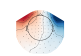

Examples#
Examples demonstrating ICA labeling for artifact correction, or annotating ICA components.

Labeling ICA components with a GUI
Labeling ICA components with a GUI
Repairing artifacts with ICA automatically using ICLabel Model
Repairing artifacts with ICA automatically using ICLabel Model